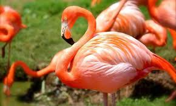
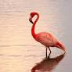

Flamingos são aves pertencentes à família Phoenicopteridae. (1)
Existem seis espécies de flamingos no mundo. (2)
As espécies mais conhecidas são o flamingo-caribenho e o flamingo-de-james. (3)
A cor rosa vibrante das penas dos flamingos é devido à sua dieta rica em beta-carotenos. (4)
Os flamingos nascem com penas brancas e ganham a cor rosa gradualmente. (5)

A cor rosa brilhante dos flamingos é um sinal de boa saúde. (6)
Flamingos têm pernas longas e finas, ideais para se deslocarem na água rasa. (7)
Suas pernas têm articulações em forma de "Z" que lhes permitem ficar em pé na água. (8)
Flamingos têm pés palmados, o que os ajuda a nadar. (9)
Eles são conhecidos por sua elegância e postura ao se alimentarem. (10)
Flamingos têm bicos curvos, que usam para filtrar alimentos da água. (11)
A comida principal dos flamingos é o plâncton, algas e pequenos invertebrados. (12)
Flamingos se alimentam com a cabeça para baixo na água. (13)
Eles usam as línguas para bombear água e filtrar os alimentos. (14)

A língua dos flamingos tem pequenas cerdas que ajudam na filtração. (15)
Flamingos são aves sociáveis e vivem em grupos chamados de colônias. (16)
Suas colônias podem conter milhares de indivíduos. (17)
Durante a época de reprodução, eles constroem ninhos de lama. (18)
Flamingos têm um sistema de acasalamento complexo. (19)
As colônias de flamingos fazem coreografias de dança para atrair parceiros. (20)

Eles são monogâmicos durante a temporada de reprodução. (21)
O ninho de um flamingo é um monte de lama com um pequeno "copo" no topo. (22)
Flamingos machos e fêmeas se revezam incubando os ovos. (23)
Os ovos de flamingo são verdes ou azul-esverdeados. (24)
O período de incubação dura cerca de 28 a 32 dias. (25)
Os filhotes de flamingo nascem com penas brancas e são alimentados com uma substância
chamada "leite de papo" regurgitada pelos pais. (26)
chamada "leite de papo" regurgitada pelos pais. (26)
A cor das penas dos filhotes começa a mudar quando eles começam a se alimentar sozinhos. (27)
Os filhotes de flamingo crescem rapidamente. (28)
Apenas um dos pais fica com os filhotes enquanto o outro se alimenta. (29)
Flamingos podem voar a uma velocidade de até 56 km/h. (30)
Eles têm uma envergadura de asas de cerca de 1,4 metros. (31)
Os flamingos são aves migratórias e viajam grandes distâncias em busca de alimento. (32)
Sua migração pode levá-los de um continente para outro. (33)
Os flamingos têm glândulas salinas especiais que ajudam a filtrar o sal da água do mar. (34)
A glândula salina está localizada perto dos olhos dos flamingos. (35)
Flamingos têm uma vida útil média de 20 a 30 anos. (36)
Sua expectativa de vida pode variar dependendo das condições do habitat e das ameaças. (37)
Os flamingos têm predadores naturais, como crocodilos e aves de rapina. (38)
Eles são animais muito adaptáveis e podem sobreviver em uma variedade de habitats aquáticos. (39)
Flamingos são encontrados em regiões tropicais e subtropicais de todo o mundo. (40)
Flamingos são encontrados em regiões tropicais e subtropicais de todo o mundo. (41)
A espécie de flamingo mais ameaçada é o flamingo-de-cuba. (42)
Flamingos se comunicam vocalmente com sons semelhantes a trombetas. (43)
Sua vocalização é usada para coordenar o comportamento do grupo. (44)
Eles têm uma visão excelente, o que os ajuda na busca de comida. (45)
A visão dos flamingos também é essencial para detectar predadores. (46)
O nome "flamingo" vem da palavra espanhola "flamenco", que significa "flamenco" ou "cor de fogo". (47)
Flamingos são uma espécie de ave antiga, existindo há milhões de anos. (48)
Eles têm adaptado ao longo do tempo para sobreviver em ambientes aquáticos. (49)
Os flamingos são frequentemente vistos em parques zoológicos e aquários ao redor do mundo. (50)
A plumagem dos flamingos pode variar em tons de rosa, dependendo da quantidade de beta-carotenos em sua dieta. (51)
A cor rosa brilhante ajuda a absorver a luz solar e mantém os flamingos aquecidos. (52)
O peso de um flamingo adulto pode variar de 1,2 a 4 kg. (53)
Flamingos são conhecidos por serem aves graciosas, tanto na água quanto em terra. (54)
Eles têm patas pretas, que são difíceis de ver quando estão na água. (55)
O voo dos flamingos é caracterizado por batidas lentas e constantes das asas. (56)
Eles têm uma capacidade notável de equilibrar-se sobre uma perna. (57)
Flamingos são aves muito resistentes e podem sobreviver em ambientes extremamente salinos. (58)
Eles desempenham um papel importante no ecossistema, pois ajudam a controlar
populações de invertebrados aquáticos. (59)
Flamingos são animais fascinantes que continuam a intrigar cientistas e entusiastas
da natureza em todo o mundo. (60)